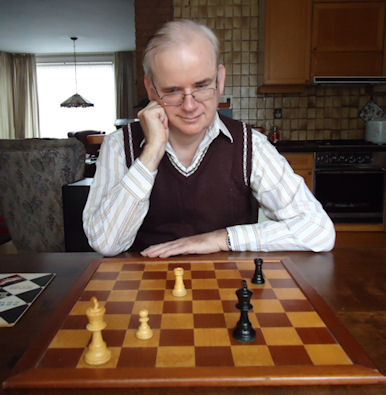

Chess Analyses
Jan van Reek
This site has three purposes:
|
A. Free downloads of large annotated chess databases Leopold Trebitsch Memorial 1907-38 |
History of correspondence chess Correspondence chess tournaments |
B. Presentation of Lessons in endgame strategy by Jan van Reek
C. Reports about the Chess Events Maastricht Foundation:
Correspondence Gambit and Nimzowitsch matches
|
 |
|
|
Jan van Reek P.O. Box 14, 41160 Ban Phu, Thailand |
Winat (Tuk) van Reek |

Last update 15.07.2015